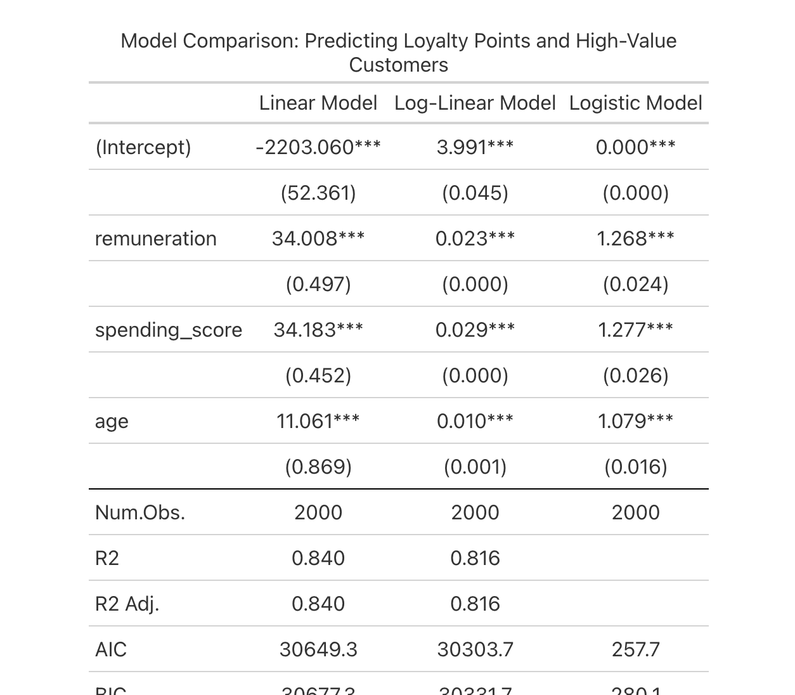

Visuals & Models



Predictive modelling, clustering, and sentiment analysis on 2,000+ customers and reviews — built with Python, R, and NLP.
Explore Findings ↓
• Spending score is the strongest predictor of loyalty (β ≈ 34).
• Mid-income customers (£50–70k) show the highest loyalty engagement.
• Income effect plateaus after £70k — diminishing returns on loyalty.
• Age contributes modestly; gender and education add no predictive lift.
Insight: Focus loyalty budget on £50–70k customers and incentivise engaged spenders, not just high earners.
K-means (k=3) revealed:
🟢 High-income, high-spenders — most valuable.
🟠 Mid-income, core spenders — large growth potential.
🔵 High-income, low-spenders — missed opportunity.
Insight: Behaviour (spending score) matters more than demographics. Target engaged spenders across income brackets.
• Reviews skew positive (avg polarity +0.12).
• Frequent words: “game”, “great”, “fun”, “love”.
• Negative mentions: “rules” and “quality” pain-points.
• Top entities: D&D, UNO, Lords of Waterdeep.
Insight: Market joy & gifting while addressing clarity in rules and product expansions.